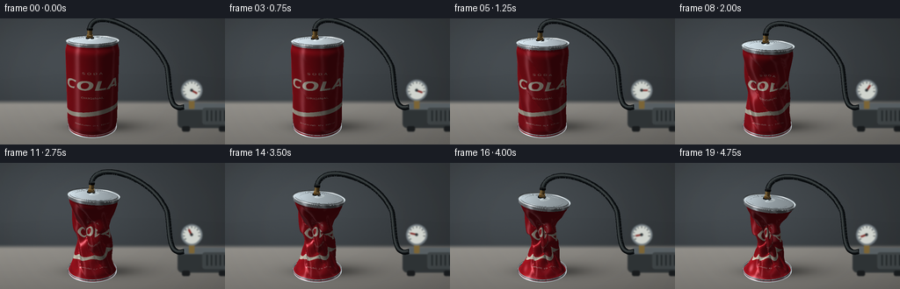
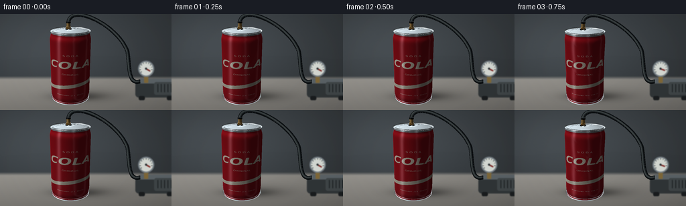

CODING AGENTS AS PIXEL WORLD MODELS
traex/GPT-6.1-Sol · mechanics_0022
点击播放 · 原生 RGB 像素
逐轮保存的候选
回放视频、检查图与代码变化。
每份候选均可单独播放。实际图片检查记录在下方工具轨迹中。
候选 01播放与检查图
点击播放 · 原生 RGB 像素


展开代码变化
--- 上一保存版本
+++ 本次保存版本
@@ -0,0 +1,334 @@
+from pathlib import Path
+import math
+import numpy as np
+from PIL import Image, ImageDraw, ImageFont, ImageFilter
+from artifact_io import save
+
+# Everything is built from simple mathematical surfaces and hand-drawn textures.
+ROOT=Path(__file__).resolve().parent
+W,H,S=256,144,3
+WW,HH=W*S,H*S
+rng=np.random.default_rng(27)
+CAM=np.array([5.,-9.,5.5]); TARGET=np.array([0.,0.,1.8])
+FORWARD=TARGET-CAM; FORWARD/=np.linalg.norm(FORWARD)
+RIGHT=np.cross(FORWARD,[0,0,1.]); RIGHT/=np.linalg.norm(RIGHT)
+UP=np.cross(RIGHT,FORWARD)
+F=320*S
+CX,CY=105*S,77*S
+VIEW=(CAM-TARGET)/np.linalg.norm(CAM-TARGET)
+LIGHT=np.array([-0.45,-0.6,1.1]); LIGHT/=np.linalg.norm(LIGHT)
+
+
+def project(P):
+ q=P-CAM
+ depth=q@FORWARD
+ return np.stack([CX+F*(q@RIGHT)/depth,CY-F*(q@UP)/depth,depth],-1)
+
+def normalize(a):
+ return a/np.maximum(np.linalg.norm(a,axis=-1,keepdims=True),1e-12)
+
+def ease(a,b,t):
+ t=np.clip((t-a)/(b-a),0,1)
+ return t*t*(3-2*t)
+
+# Red lacquer, printed curved branding and very fine aluminum scratches.
+TW,TH=1536,1536
+tex=Image.new('RGB',(TW,TH),(179,17,29))
+d=ImageDraw.Draw(tex)
+for yy in range(TH):
+ q=yy/TH
+ d.line((0,yy,TW,yy),fill=(int(176+12*math.sin(q*3)),int(18+4*q),int(30+5*q)))
+for shift in [-1100,-300,500,1300]:
+ d.polygon([(shift,TH),(shift+110,TH),(shift+700,0),(shift+590,0)],fill=(189,23,34))
+# A flowing cream stripe low on the label, below the logotype.
+pts=[]
+for xx in range(TW+1):
+ yy=1090+70*np.sin(xx/TW*2*np.pi+0.4)
+ pts.append((xx,yy))
+for xx in range(TW,-1,-1):
+ yy=1170+70*np.sin(xx/TW*2*np.pi+0.4)
+ pts.append((xx,yy))
+d.polygon(pts,fill=(237,228,207))
+fontdir='/usr/share/fonts/truetype/dejavu/'
+def font(name,size): return ImageFont.truetype(fontdir+name,size)
+def centered(text,y,ff,color):
+ box=d.textbbox((0,0),text,font=ff)
+ d.text(((TW-box[2]+box[0])/2,y),text,font=ff,fill=color,stroke_width=0)
+centered('S O D A',380,font('DejaVuSans.ttf',47),(245,230,212))
+centered('COLA',490,font('DejaVuSansCondensed-BoldOblique.ttf',217),(255,244,222))
+centered('ORIGINAL',800,font('DejaVuSans.ttf',43),(246,227,210))
+centered('SPARKLING ⢠330 ml',1300,font('DejaVuSans.ttf',29),(248,230,219))
+# Side seam and small factual label graphics away from the main logo.
+for xx in range(90,195,7):
+ d.line((xx,1130,xx,1300),fill=(231,216,204),width=2 if xx%3 else 4)
+tex=np.array(tex).astype(float)/255
+tex+=rng.normal(0,.003,(TH,TW,1))
+tex=np.clip(tex,0,1)
+
+class Raster:
+ def __init__(self,img):
+ self.rgb=np.asarray(img).astype(np.float32)/255
+ self.depth=np.full((HH,WW),np.inf,np.float32)
+ def mesh(self,P,faces,normals=None,uv=None,color=(.7,.7,.7),metal=0.0,texture=False):
+ P=np.asarray(P); faces=np.asarray(faces)
+ pp=project(P)
+ if normals is None:
+ norms=normalize(np.cross(P[faces[:,1]]-P[faces[:,0]],P[faces[:,2]]-P[faces[:,0]]))
+ normals=np.zeros_like(P)
+ for i in range(3): np.add.at(normals,faces[:,i],norms)
+ normals=normalize(normals)
+ # All vertices carry illumination; the dense surface gives smooth reflections.
+ nv=normalize(CAM-P)
+ nd=np.maximum(0,normals@LIGHT)
+ half=normalize(nv+LIGHT)
+ spec=np.maximum(0,np.sum(normals*half,axis=1))**(95 if metal else 48)
+ # Studio softbox reflections are evaluated in reflection-vector space.
+ refl=2*np.sum(normals*nv,axis=1,keepdims=True)*normals-nv
+ strip=np.exp(-((refl[:,0]+.58)/.16)**2)*np.clip(.6+.4*refl[:,2],0,1)
+ strip2=np.exp(-((refl[:,0]-.72)/.07)**2)*.3
+ amb=.24+.61*nd+.11*np.maximum(normals[:,2],0)
+ # Metallic rims reflect the studio more strongly than the coated body.
+ shine=(.33 if not metal else .67)*strip+strip2*(.15+.4*metal)+spec*(.3+.55*metal)
+ for face in faces:
+ a,b,c=pp[face]
+ area=(b[0]-a[0])*(c[1]-a[1])-(b[1]-a[1])*(c[0]-a[0])
+ if abs(area)<1e-7: continue
+ # normal-facing rejection (normals also allow two-sided creases).
+ worldmean=P[face].mean(0)
+ facen=np.cross(P[face[1]]-P[face[0]],P[face[2]]-P[face[0]])
+ if np.dot(facen,CAM-worldmean)<=0: continue
+ x0=max(0,int(np.floor(min(a[0],b[0],c[0])))); x1=min(WW-1,int(np.ceil(max(a[0],b[0],c[0]))))
+ y0=max(0,int(np.floor(min(a[1],b[1],c[1])))); y1=min(HH-1,int(np.ceil(max(a[1],b[1],c[1]))))
+ if x0>x1 or y0>y1: continue
+ yy,xx=np.mgrid[y0:y1+1,x0:x1+1]; xx=xx+.5; yy=yy+.5
+ wb=((xx-a[0])*(c[1]-a[1])-(yy-a[1])*(c[0]-a[0]))/area
+ wc=((b[0]-a[0])*(yy-a[1])-(b[1]-a[1])*(xx-a[0]))/area
+ wa=1-wb-wc
+ z=wa*a[2]+wb*b[2]+wc*c[2]
+ valid=(wa>=-1e-5)&(wb>=-1e-5)&(wc>=-1e-5)&(z<self.depth[y0:y1+1,x0:x1+1])
+ if not np.any(valid): continue
+ weights=np.stack([wa[valid],wb[valid],wc[valid]],-1)
+ if texture:
+ uvp=weights@uv[face]
+ tx=np.clip((uvp[:,0]*(TW-1)).astype(int),0,TW-1)
+ ty=np.clip((uvp[:,1]*(TH-1)).astype(int),0,TH-1)
+ base=tex[ty,tx]
+ else:
+ base=np.broadcast_to(np.asarray(color),(len(weights),3))
+ lighting=weights@amb[face]
+ glint=weights@shine[face]
+ rgb=base*lighting[:,None]+glint[:,None]*np.array([.90,.96,1.])
+ self.rgb[y0:y1+1,x0:x1+1][valid]=np.clip(rgb,0,1)
+ self.depth[y0:y1+1,x0:x1+1][valid]=z[valid]
+
+# Cylinder surfaces, discs, hollow rims, tab and nozzle.
+def gridfaces(n,m,wrap=False):
+ faces=[]
+ for j in range(n-1):
+ for i in range(m if wrap else m-1):
+ ni=(i+1)%m
+ a=j*m+i; b=j*m+ni; c=(j+1)*m+i; dd=(j+1)*m+ni
+ faces.extend([(a,b,c),(b,dd,c)])
+ return np.array(faces)
+
+ANG0=math.atan2(CAM[1],CAM[0])-math.pi
+NA,NZ=128,81
+angles=np.linspace(ANG0,ANG0+2*np.pi,NA+1)
+zeta=np.linspace(0,1,NZ)
+BODY_FACES=gridfaces(NZ,NA+1)
+
+def progress(t):
+ # Gradual evacuation followed by several fast local wall failures.
+ a=.22*ease(.05,.43,t)+.38*ease(.35,.58,t)+.40*ease(.58,.95,t)
+ return a
+
+def lid_transform(P,p):
+ P=np.asarray(P).copy()
+ # The rigid top tilts while the wall folds and the bottom stays planted.
+ angle=.12*p
+ cs,sn=np.cos(angle),np.sin(angle)
+ x=P[:,0]*cs+P[:,2]*sn
+ z=-P[:,0]*sn+P[:,2]*cs
+ P[:,0]=x+.12*p; P[:,1]-=.05*p; P[:,2]=z+3.60-.62*p
+ return P
+
+def body(p,t):
+ th,zz=np.meshgrid(angles,zeta)
+ # Rolled-in necks, with an initially smooth, cylindrical aluminum wall.
+ radius=1-.063*np.exp(-((zz-.996)/.045)**2)-.03*np.exp(-((zz-.02)/.035)**2)
+ phi=th-math.atan2(CAM[1],CAM[0])
+ env=np.sin(np.pi*zz)**.8
+ lower= ease(.27,.52,t)
+ upper= ease(.45,.73,t)
+ crushing=ease(.60,.96,t)
+ # Oblique pressure-buckling lobes. Radial cusps make crisp folded ribs.
+ ridge=np.abs(np.sin(2.8*phi+7.9*zz+.6))**.42
+ contraction=p*env*(.51+.31*(1-ridge))
+ # Broad independent indentations initiate at different moments.
+ def gauss(center,zc,width,zw,slant):
+ dd=np.arctan2(np.sin(phi-center-slant*(zz-zc)),np.cos(phi-center-slant*(zz-zc)))
+ return np.exp(-(dd/width)**2-((zz-zc)/zw)**2)
+ dent1=gauss(-.35,.65,.7,.22,2.9)
+ dent2=gauss(.80,.32,.65,.21,-2.0)
+ dent3=gauss(2.5,.50,.85,.3,1.1)
+ radius*=1-contraction-.22*lower*dent1-.16*upper*dent2-.13*crushing*dent3
+ radius+=p*.10*env*np.cos(5*phi+12*zz)*(ridge**2)
+ radius=np.maximum(radius,.17)
+ x=radius*np.cos(th)+p*(.12*zz+.065*np.sin(5*zz)*env)
+ y=radius*np.sin(th)-.05*p*zz+.065*p*np.sin(8*zz)*env
+ z=.10+zz*(3.40-.62*p)
+ z+=p*env*(.11*np.sin(3*phi+13*zz)+.07*np.sin(7*phi-16*zz))
+ # Match the tilted rigid lid at the upper shoulder.
+ z-=.12*p*radius*np.cos(th)*zz**4
+ P=np.stack([x,y,z],-1)
+ du=np.gradient(P,axis=1); dv=np.gradient(P,axis=0)
+ normals=normalize(np.cross(du,dv))
+ uv=np.stack([np.broadcast_to(np.linspace(0,1,NA+1),(NZ,NA+1)),1-zz],-1)
+ return P.reshape(-1,3),normals.reshape(-1,3),uv.reshape(-1,2)
+
+def torus(rad,tube,z,p=None,flat=1,n=112,m=12):
+ a,b=np.meshgrid(np.linspace(0,2*np.pi,n,endpoint=False),np.linspace(0,2*np.pi,m,endpoint=False))
+ rr=rad+tube*np.cos(b)
+ P=np.stack([rr*np.cos(a),rr*np.sin(a),z+tube*np.sin(b)*flat],-1).reshape(-1,3)
+ if p is not None: P=lid_transform(P,p)
+ # Ordering: b runs vertically and a horizontally. Torus normals need reverse winding.
+ faces=[]
+ for j in range(m):
+ for i in range(n):
+ aa=j*n+i; bb=j*n+(i+1)%n; cc=((j+1)%m)*n+i; dd=((j+1)%m)*n+(i+1)%n
+ faces.extend([(aa,cc,bb),(bb,cc,dd)])
+ return P,np.array(faces)
+
+def disc(rad,z,p=None,n=128):
+ a=np.linspace(0,2*np.pi,n,endpoint=False)
+ P=np.vstack([[0,0,z],np.stack([rad*np.cos(a),rad*np.sin(a),np.full(n,z)],-1)])
+ faces=np.array([(0,i+1,(i+1)%n+1) for i in range(n)])
+ if p is not None: P=lid_transform(P,p)
+ return P,faces
+
+def cylinder(rad,z0,z1,p=None,offset=(0,0),n=48,color=None):
+ a=np.linspace(0,2*np.pi,n,endpoint=False)
+ P=np.stack([np.tile(rad*np.cos(a)+offset[0],2),np.tile(rad*np.sin(a)+offset[1],2),np.repeat([z0,z1],n)],-1)
+ faces=gridfaces(2,n,True)
+ if p is not None: P=lid_transform(P,p)
+ return P,faces
+
+# Static studio/laboratory bench. A restrained, defocused pump contextualizes the vacuum.
+def background(t):
+ yy,xx=np.mgrid[:HH,:WW]; x=xx/S; y=yy/S
+ bg=np.zeros((HH,WW,3),float)
+ wall=.19+.115*np.exp(-((x-67)/157)**2-((y-48)/82)**2)
+ bg[:]=np.stack([wall*.92,wall,wall*1.06],-1)
+ # blurred horizontal back-wall and worktop with no distracting decoration
+ table=np.clip((y-93)/5,0,1)
+ desk=.44+.13*(1-(y-96)/65)-.09*x/256
+ rgbdesk=np.stack([desk*1.06,desk*1.04,desk],-1)
+ bg=bg*(1-table[...,None])+rgbdesk*table[...,None]
+ noise=rng.normal(0,.002,(HH,WW,1))
+ bg=np.clip(bg+noise,0,1)
+ im=Image.fromarray((bg*255).astype('uint8'))
+ dd=ImageDraw.Draw(im)
+ def box(coords,fill,r=0):
+ coords=tuple(int(v*S) for v in coords)
+ if r: dd.rounded_rectangle(coords,r*S,fill=fill)
+ else: dd.rectangle(coords,fill=fill)
+ # A compact gray vacuum pump, partially off screen to the right.
+ box((202,100,267,125),(49,54,56),5)
+ box((208,97,265,104),(92,100,104),2)
+ box((230,102,271,121),(65,71,73),3)
+ for x0 in range(235,268,5): box((x0,105,x0+1,117),(30,35,37))
+ box((207,123,216,129),(26,29,31),2); box((249,123,257,129),(27,30,32),2)
+ box((215,91,221,103),(129,105,57),1)
+ # Circular vacuum gauge, white dial with decreasing pressure needle.
+ gx,gy,gr=218,82,12
+ dd.ellipse(((gx-gr)*S,(gy-gr)*S,(gx+gr)*S,(gy+gr)*S),fill=(118,127,133))
+ dd.ellipse(((gx-gr+2)*S,(gy-gr+2)*S,(gx+gr-2)*S,(gy+gr-2)*S),fill=(215,219,213))
+ for k in range(10):
+ a=math.radians(145+k*25)
+ dd.line(((gx+8*np.cos(a))*S,(gy+8*np.sin(a))*S,(gx+9.5*np.cos(a))*S,(gy+9.5*np.sin(a))*S),fill=(62,70,73),width=S)
+ a=math.radians(30-230*ease(.06,.94,t))
+ dd.line((gx*S,gy*S,(gx+7*np.cos(a))*S,(gy+7*np.sin(a))*S),fill=(122,31,28),width=2*S)
+ dd.ellipse(((gx-1.5)*S,(gy-1.5)*S,(gx+1.5)*S,(gy+1.5)*S),fill=(38,44,47))
+ # slight depth-of-field: pump is behind the main subject
+ im=im.filter(ImageFilter.GaussianBlur(.7*S))
+ arr=np.array(im).astype(float)/255
+ # Soft contact shadow plus the elongated shadow of the can to the right.
+ center=project(np.array([[0,0,.0]]))[0]
+ shadow=.34*np.exp(-((xx-center[0]-12*S)/(36*S))**2-((yy-center[1]+.3*S)/(6*S))**2)
+ shadow+=.15*np.exp(-((xx-center[0]-28*S)/(47*S))**2-((yy-center[1]+2*S)/(10*S))**2)
+ arr*=1-shadow[...,None]
+ return Image.fromarray(np.uint8(np.clip(arr,0,1)*255))
+
+# Black flexible vacuum line, drawn with a softly highlighted circular cross section.
+def hose(raster,p):
+ endpoint=lid_transform(np.array([[-.22,.21,.36]]),p)[0]
+ start=project(endpoint[None])[0,:2]/S
+ control1=start+np.array([5,-29])
+ control2=np.array([176,17])
+ end=np.array([190,56])
+ q=np.linspace(0,1,100)[:,None]
+ first=(1-q)**3*start+3*(1-q)**2*q*control1+3*(1-q)*q*q*control2+q**3*end
+ second=(1-q)**3*end+3*(1-q)**2*q*np.array([194,77])+3*(1-q)*q*q*np.array([190,107])+q**3*np.array([209,101])
+ points=np.vstack([first,second])
+ # Pipe stays behind the can/lid; the nozzle cylinder occludes its root.
+ im=Image.fromarray(np.uint8(np.clip(raster.rgb,0,1)*255)); draw=ImageDraw.Draw(im)
+ coords=[tuple(pt*S) for pt in points]
+ draw.line(coords,fill=(11,14,16),width=6*S,joint='curve')
+ draw.line([(x-.7*S,y-.6*S) for x,y in coords],fill=(39,45,47),width=3*S,joint='curve')
+ draw.line([(x-1.0*S,y-.8*S) for x,y in coords],fill=(65,71,71),width=S,joint='curve')
+ raster.rgb=np.asarray(im).astype(np.float32)/255
+
+
+def render(i):
+ t=i/19
+ p=progress(t)
+ r=Raster(background(t))
+ hose(r,p)
+ P,N,UV=body(p,t)
+ r.mesh(P,BODY_FACES,N,UV,texture=True)
+ # Bare aluminum bottom collar, rolled lower rim and inset foot.
+ P0,F0=cylinder(.97,.09,.17); r.mesh(P0,F0,color=(.63,.67,.69),metal=1)
+ for rad,z,tr in [(.96,.09,.045),(.982,.17,.014)]:
+ P0,F0=torus(rad,tr,z); r.mesh(P0,F0,color=(.67,.70,.72),metal=1)
+ # Top shoulder and rolled seam, both remain recognizable under vacuum collapse.
+ P0,F0=cylinder(.936,-.13,-.012,p); r.mesh(P0,F0,color=(.66,.68,.7),metal=1)
+ P0,F0=disc(.932,-.025,p); r.mesh(P0,F0,color=(.57,.61,.63),metal=1)
+ for rad,tr,z in [(.932,.047,0),(.843,.013,-.025),(.705,.008,-.023)]:
+ P0,F0=torus(rad,tr,z,p,flat=.6); r.mesh(P0,F0,color=(.69,.73,.75),metal=1)
+ # Embossed unopened drinking port, with no exposed dark opening.
+ aa=np.linspace(0,2*np.pi,64,endpoint=False)
+ outer=np.stack([.20*np.cos(aa)+.11,.33*np.sin(aa)-.22,np.full(64,-.016)],-1)
+ inner=np.stack([.18*np.cos(aa)+.11,.31*np.sin(aa)-.22,np.full(64,-.018)],-1)
+ P0=lid_transform(np.vstack([outer,inner]),p)
+ ff=[]
+ for j in range(64):
+ k=(j+1)%64; ff.extend([(j,k,64+j),(k,64+k,64+j)])
+ # reverse so their top sides are visible
+ r.mesh(P0,np.array(ff)[:,::-1],color=(.41,.46,.48),metal=.8)
+ # Silver pull-tab, oval annular pressing lying flat above the still-sealed lid.
+ outer=np.stack([.145*np.cos(aa),.29*np.sin(aa)+.05,np.full(64,.024)],-1)
+ inner=np.stack([.072*np.cos(aa),.14*np.sin(aa)+.07,np.full(64,.027)],-1)
+ P0=lid_transform(np.vstack([outer,inner]),p)
+ r.mesh(P0,np.array(ff),color=(.73,.77,.78),metal=1)
+ P0,F0=disc(.057,.039,None,40); P0[:,1]-=.13; P0=lid_transform(P0,p)
+ r.mesh(P0,F0,color=(.63,.69,.71),metal=1)
+ # Sealed brass extraction fitting through a black airtight lid gasket.
+ for rad,z0,z1,col,n in [(.156,.0,.041,(.045,.051,.052),48),(.132,.041,.13,(.66,.46,.17),6),(.092,.13,.35,(.69,.51,.22),36),(.114,.31,.39,(.052,.062,.066),40)]:
+ P0,F0=cylinder(rad,z0,z1,p,offset=(-.22,.21),n=n)
+ r.mesh(P0,F0,color=col,metal=0 if col[0]<.1 else .8)
+ P0,F0=disc(rad,z1,None,n); P0[:,0]-=.22; P0[:,1]+=.21; P0=lid_transform(P0,p)
+ r.mesh(P0,F0,color=col,metal=.7 if col[0]>.1 else 0)
+ # subtle photographic vignette and downsampling keep edges natural
+ yy,xx=np.mgrid[:HH,:WW]
+ vig=1-.075*((xx-WW*.47)/(WW*.7))**2-.055*((yy-HH*.47)/(HH*.8))**2
+ rgb=np.clip(r.rgb*vig[...,None],0,1)
+ im=Image.fromarray(np.uint8(rgb*255)).resize((W,H),Image.Resampling.LANCZOS)
+ return np.asarray(im)
+
+if __name__=='__main__':
+ frames=[]
+ for i in range(20):
+ print('render',i,flush=True)
+ frames.append(render(i))
+ save(np.stack(frames).astype(np.uint8),ROOT)
+ print('Saved all required RGB video artifacts.',flush=True)
可观测工具轨迹
实际执行的命令与返回图片。
命令 1exit 0
/bin/bash -lc 'ls -la && cat prompt.txt && cat GENERATION_RULES.md && cat task_spec.json'
命令 2exit 0
/bin/bash -lc "cat artifact_io.py && python - <<'PY' import importlib.util for x in ['numpy','PIL','scipy']: print(x, bool(importlib.util.find_spec(x))) PY"
命令 3exit 0
/bin/bash -lc 'fc-list | head -12'
命令 4exit 0
/bin/bash -lc "cat > generate.py <<'PY'
from pathlib import Path
import math
import numpy as np
from PIL import Image, ImageDraw, ImageFont, ImageFilter
from artifact_io import save
# Everything is built from simple mathematical surfaces and hand-drawn textures.
ROOT=Path(__file__).resolve().parent
W,H,S=256,144,3
WW,HH=W*S,H*S
rng=np.random.default_rng(27)
CAM=np.array([5.,-9.,5.5]); TARGET=np.array([0.,0.,1.8])
FORWARD=TARGET-CAM; FORWARD/=np.linalg.norm(FORWARD)
RIGHT=np.cross(FORWARD,[0,0,1.]); RIGHT/=np.linalg.norm(RIGHT)
UP=np.cross(RIGHT,FORWARD)
F=320*S
CX,CY=105*S,77*S
VIEW=(CAM-TARGET)/np.linalg.norm(CAM-TARGET)
LIGHT=np.array([-0.45,-0.6,1.1]); LIGHT/=np.linalg.norm(LIGHT)
def project(P):
q=P-CAM
depth=q@FORWARD
return np.stack([CX+F*(q@RIGHT)/depth,CY-F*(q@UP)/depth,depth],-1)
def normalize(a):
return a/np.maximum(np.linalg.norm(a,axis=-1,keepdims=True),1e-12)
def ease(a,b,t):
t=np.clip((t-a)/(b-a),0,1)
return t*t*(3-2*t)
# Red lacquer, printed curved branding and very fine aluminum scratches.
TW,TH=1536,1536
tex=Image.new('RGB',(TW,TH),(179,17,29))
d=ImageDraw.Draw(tex)
for yy in range(TH):
q=yy/TH
d.line((0,yy,TW,yy),fill=(int(176+12*math.sin(q*3)),int(18+4*q),int(30+5*q)))
for shift in [-1100,-300,500,1300]:
d.polygon([(shift,TH),(shift+110,TH),(shift+700,0),(shift+590,0)],fill=(189,23,34))
# A flowing cream stripe low on the label, below the logotype.
pts=[]
for xx in range(TW+1):
yy=1090+70*np.sin(xx/TW*2*np.pi+0.4)
pts.append((xx,yy))
for xx in range(TW,-1,-1):
yy=1170+70*np.sin(xx/TW*2*np.pi+0.4)
pts.append((xx,yy))
d.polygon(pts,fill=(237,228,207))
fontdir='/usr/share/fonts/truetype/dejavu/'
def font(name,size): return ImageFont.truetype(fontdir+name,size)
def centered(text,y,ff,color):
box=d.textbbox((0,0),text,font=ff)
d.text(((TW-box[2]+box[0])/2,y),text,font=ff,fill=color,stroke_width=0)
centered('S O D A',380,font('DejaVuSans.ttf',47),(245,230,212))
centered('COLA',490,font('DejaVuSansCondensed-BoldOblique.ttf',217),(255,244,222))
centered('ORIGINAL',800,font('DejaVuSans.ttf',43),(246,227,210))
centered('SPARKLING ⢠330 ml',1300,font('DejaVuSans.ttf',29),(248,230,219))
# Side seam and small factual label graphics away from the main logo.
for xx in range(90,195,7):
d.line((xx,1130,xx,1300),fill=(231,216,204),width=2 if xx%3 else 4)
tex=np.array(tex).astype(float)/255
tex+=rng.normal(0,.003,(TH,TW,1))
tex=np.clip(tex,0,1)
class Raster:
def __init__(self,img):
self.rgb=np.asarray(img).astype(np.float32)/255
self.depth=np.full((HH,WW),np.inf,np.float32)
def mesh(self,P,faces,normals=None,uv=None,color=(.7,.7,.7),metal=0.0,texture=False):
P=np.asarray(P); faces=np.asarray(faces)
pp=project(P)
if normals is None:
norms=normalize(np.cross(P[faces[:,1]]-P[faces[:,0]],P[faces[:,2]]-P[faces[:,0]]))
normals=np.zeros_like(P)
for i in range(3): np.add.at(normals,faces[:,i],norms)
normals=normalize(normals)
# All vertices carry illumination; the dense surface gives smooth reflections.
nv=normalize(CAM-P)
nd=np.maximum(0,normals@LIGHT)
half=normalize(nv+LIGHT)
spec=np.maximum(0,np.sum(normals*half,axis=1))**(95 if metal else 48)
# Studio softbox reflections are evaluated in reflection-vector space.
refl=2*np.sum(normals*nv,axis=1,keepdims=True)*normals-nv
strip=np.exp(-((refl[:,0]+.58)/.16)**2)*np.clip(.6+.4*refl[:,2],0,1)
strip2=np.exp(-((refl[:,0]-.72)/.07)**2)*.3
amb=.24+.61*nd+.11*np.maximum(normals[:,2],0)
# Metallic rims reflect the studio more strongly than the coated body.
shine=(.33 if not metal else .67)*strip+strip2*(.15+.4*metal)+spec*(.3+.55*metal)
for face in faces:
a,b,c=pp[face]
area=(b[0]-a[0])*(c[1]-a[1])-(b[1]-a[1])*(c[0]-a[0])
if abs(area)<1e-7: continue
# normal-facing rejection (normals also allow two-sided creases).
worldmean=P[face].mean(0)
facen=np.cross(P[face[1]]-P[face[0]],P[face[2]]-P[face[0]])
if np.dot(facen,CAM-worldmean)<=0: continue
x0=max(0,int(np.floor(min(a[0],b[0],c[0])))); x1=min(WW-1,int(np.ceil(max(a[0],b[0],c[0]))))
y0=max(0,int(np.floor(min(a[1],b[1],c[1])))); y1=min(HH-1,int(np.ceil(max(a[1],b[1],c[1]))))
if x0>x1 or y0>y1: continue
yy,xx=np.mgrid[y0:y1+1,x0:x1+1]; xx=xx+.5; yy=yy+.5
wb=((xx-a[0])*(c[1]-a[1])-(yy-a[1])*(c[0]-a[0]))/area
wc=((b[0]-a[0])*(yy-a[1])-(b[1]-a[1])*(xx-a[0]))/area
wa=1-wb-wc
z=wa*a[2]+wb*b[2]+wc*c[2]
valid=(wa>=-1e-5)&(wb>=-1e-5)&(wc>=-1e-5)&(z<self.depth[y0:y1+1,x0:x1+1])
if not np.any(valid): continue
weights=np.stack([wa[valid],wb[valid],wc[valid]],-1)
if texture:
uvp=weights@uv[face]
tx=np.clip((uvp[:,0]*(TW-1)).astype(int),0,TW-1)
ty=np.clip((uvp[:,1]*(TH-1)).astype(int),0,TH-1)
base=tex[ty,tx]
else:
base=np.broadcast_to(np.asarray(color),(len(weights),3))
lighting=weights@amb[face]
glint=weights@shine[face]
rgb=base*lighting[:,None]+glint[:,None]*np.array([.90,.96,1.])
self.rgb[y0:y1+1,x0:x1+1][valid]=np.clip(rgb,0,1)
self.depth[y0:y1+1,x0:x1+1][valid]=z[valid]
# Cylinder surfaces, discs, hollow rims, tab and nozzle.
def gridfaces(n,m,wrap=False):
faces=[]
for j in range(n-1):
for i in range(m if wrap else m-1):
ni=(i+1)%m
a=j*m+i; b=j*m+ni; c=(j+1)*m+i; dd=(j+1)*m+ni
faces.extend([(a,b,c),(b,dd,c)])
return np.array(faces)
ANG0=math.atan2(CAM[1],CAM[0])-math.pi
NA,NZ=128,81
angles=np.linspace(ANG0,ANG0+2*np.pi,NA+1)
zeta=np.linspace(0,1,NZ)
BODY_FACES=gridfaces(NZ,NA+1)
def progress(t):
# Gradual evacuation followed by several fast local wall failures.
a=.22*ease(.05,.43,t)+.38*ease(.35,.58,t)+.40*ease(.58,.95,t)
return a
def lid_transform(P,p):
P=np.asarray(P).copy()
# The rigid top tilts while the wall folds and the bottom stays planted.
angle=.12*p
cs,sn=np.cos(angle),np.sin(angle)
x=P[:,0]*cs+P[:,2]*sn
z=-P[:,0]*sn+P[:,2]*cs
P[:,0]=x+.12*p; P[:,1]-=.05*p; P[:,2]=z+3.60-.62*p
return P
def body(p,t):
th,zz=np.meshgrid(angles,zeta)
# Rolled-in necks, with an initially smooth, cylindrical aluminum wall.
radius=1-.063*np.exp(-((zz-.996)/.045)**2)-.03*np.exp(-((zz-.02)/.035)**2)
phi=th-math.atan2(CAM[1],CAM[0])
env=np.sin(np.pi*zz)**.8
lower= ease(.27,.52,t)
upper= ease(.45,.73,t)
crushing=ease(.60,.96,t)
# Oblique pressure-buckling lobes. Radial cusps make crisp folded ribs.
ridge=np.abs(np.sin(2.8*phi+7.9*zz+.6))**.42
contraction=p*env*(.51+.31*(1-ridge))
# Broad independent indentations initiate at different moments.
def gauss(center,zc,width,zw,slant):
dd=np.arctan2(np.sin(phi-center-slant*(zz-zc)),np.cos(phi-center-slant*(zz-zc)))
return np.exp(-(dd/width)**2-((zz-zc)/zw)**2)
dent1=gauss(-.35,.65,.7,.22,2.9)
dent2=gauss(.80,.32,.65,.21,-2.0)
dent3=gauss(2.5,.50,.85,.3,1.1)
radius*=1-contraction-.22*lower*dent1-.16*upper*dent2-.13*crushing*dent3
radius+=p*.10*env*np.cos(5*phi+12*zz)*(ridge**2)
radius=np.maximum(radius,.17)
x=radius*np.cos(th)+p*(.12*zz+.065*np.sin(5*zz)*env)
y=radius*np.sin(th)-.05*p*zz+.065*p*np.sin(8*zz)*env
z=.10+zz*(3.40-.62*p)
z+=p*env*(.11*np.sin(3*phi+13*zz)+.07*np.sin(7*phi-16*zz))
# Match the tilted rigid lid at the upper shoulder.
z-=.12*p*radius*np.cos(th)*zz**4
P=np.stack([x,y,z],-1)
du=np.gradient(P,axis=1); dv=np.gradient(P,axis=0)
normals=normalize(np.cross(du,dv))
uv=np.stack([np.broadcast_to(np.linspace(0,1,NA+1),(NZ,NA+1)),1-zz],-1)
return P.reshape(-1,3),normals.reshape(-1,3),uv.reshape(-1,2)
def torus(rad,tube,z,p=None,flat=1,n=112,m=12):
a,b=np.meshgrid(np.linspace(0,2*np.pi,n,endpoint=False),np.linspace(0,2*np.pi,m,endpoint=False))
rr=rad+tube*np.cos(b)
P=np.stack([rr*np.cos(a),rr*np.sin(a),z+tube*np.sin(b)*flat],-1).reshape(-1,3)
if p is not None: P=lid_transform(P,p)
# Ordering: b runs vertically and a horizontally. Torus normals need reverse winding.
faces=[]
for j in range(m):
for i in range(n):
aa=j*n+i; bb=j*n+(i+1)%n; cc=((j+1)%m)*n+i; dd=((j+1)%m)*n+(i+1)%n
faces.extend([(aa,cc,bb),(bb,cc,dd)])
return P,np.array(faces)
def disc(rad,z,p=None,n=128):
a=np.linspace(0,2*np.pi,n,endpoint=False)
P=np.vstack([[0,0,z],np.stack([rad*np.cos(a),rad*np.sin(a),np.full(n,z)],-1)])
faces=np.array([(0,i+1,(i+1)%n+1) for i in range(n)])
if p is not None: P=lid_transform(P,p)
return P,faces
def cylinder(rad,z0,z1,p=None,offset=(0,0),n=48,color=None):
a=np.linspace(0,2*np.pi,n,endpoint=False)
P=np.stack([np.tile(rad*np.cos(a)+offset[0],2),np.tile(rad*np.sin(a)+offset[1],2),np.repeat([z0,z1],n)],-1)
faces=gridfaces(2,n,True)
if p is not None: P=lid_transform(P,p)
return P,faces
# Static studio/laboratory bench. A restrained, defocused pump contextualizes the vacuum.
def background(t):
yy,xx=np.mgrid[:HH,:WW]; x=xx/S; y=yy/S
bg=np.zeros((HH,WW,3),float)
wall=.19+.115*np.exp(-((x-67)/157)**2-((y-48)/82)**2)
bg[:]=np.stack([wall*.92,wall,wall*1.06],-1)
# blurred horizontal back-wall and worktop with no distracting decoration
table=np.clip((y-93)/5,0,1)
desk=.44+.13*(1-(y-96)/65)-.09*x/256
rgbdesk=np.stack([desk*1.06,desk*1.04,desk],-1)
bg=bg*(1-table[...,None])+rgbdesk*table[...,None]
noise=rng.normal(0,.002,(HH,WW,1))
bg=np.clip(bg+noise,0,1)
im=Image.fromarray((bg*255).astype('uint8'))
dd=ImageDraw.Draw(im)
def box(coords,fill,r=0):
coords=tuple(int(v*S) for v in coords)
if r: dd.rounded_rectangle(coords,r*S,fill=fill)
else: dd.rectangle(coords,fill=fill)
# A compact gray vacuum pump, partially off screen to the right.
box((202,100,267,125),(49,54,56),5)
box((208,97,265,104),(92,100,104),2)
box((230,102,271,121),(65,71,73),3)
for x0 in range(235,268,5): box((x0,105,x0+1,117),(30,35,37))
box((207,123,216,129),(26,29,31),2); box((249,123,257,129),(27,30,32),2)
box((215,91,221,103),(129,105,57),1)
# Circular vacuum gauge, white dial with decreasing pressure needle.
gx,gy,gr=218,82,12
dd.ellipse(((gx-gr)*S,(gy-gr)*S,(gx+gr)*S,(gy+gr)*S),fill=(118,127,133))
dd.ellipse(((gx-gr+2)*S,(gy-gr+2)*S,(gx+gr-2)*S,(gy+gr-2)*S),fill=(215,219,213))
for k in range(10):
a=math.radians(145+k*25)
dd.line(((gx+8*np.cos(a))*S,(gy+8*np.sin(a))*S,(gx+9.5*np.cos(a))*S,(gy+9.5*np.sin(a))*S),fill=(62,70,73),width=S)
a=math.radians(30-230*ease(.06,.94,t))
dd.line((gx*S,gy*S,(gx+7*np.cos(a))*S,(gy+7*np.sin(a))*S),fill=(122,31,28),width=2*S)
dd.ellipse(((gx-1.5)*S,(gy-1.5)*S,(gx+1.5)*S,(gy+1.5)*S),fill=(38,44,47))
# slight depth-of-field: pump is behind the main subject
im=im.filter(ImageFilter.GaussianBlur(.7*S))
arr=np.array(im).astype(float)/255
# Soft contact shadow plus the elongated shadow of the can to the right.
center=project(np.array([[0,0,.0]]))[0]
shadow=.34*np.exp(-((xx-center[0]-12*S)/(36*S))**2-((yy-center[1]+.3*S)/(6*S))**2)
shadow+=.15*np.exp(-((xx-center[0]-28*S)/(47*S))**2-((yy-center[1]+2*S)/(10*S))**2)
arr*=1-shadow[...,None]
return Image.fromarray(np.uint8(np.clip(arr,0,1)*255))
# Black flexible vacuum line, drawn with a softly highlighted circular cross section.
def hose(raster,p):
endpoint=lid_transform(np.array([[-.22,.21,.36]]),p)[0]
start=project(endpoint[None])[0,:2]/S
control1=start+np.array([5,-29])
control2=np.array([176,17])
end=np.array([190,56])
q=np.linspace(0,1,100)[:,None]
first=(1-q)**3*start+3*(1-q)**2*q*control1+3*(1-q)*q*q*control2+q**3*end
second=(1-q)**3*end+3*(1-q)**2*q*np.array([194,77])+3*(1-q)*q*q*np.array([190,107])+q**3*np.array([209,101])
points=np.vstack([first,second])
# Pipe stays behind the can/lid; the nozzle cylinder occludes its root.
im=Image.fromarray(np.uint8(np.clip(raster.rgb,0,1)*255)); draw=ImageDraw.Draw(im)
coords=[tuple(pt*S) for pt in points]
draw.line(coords,fill=(11,14,16),width=6*S,joint='curve')
draw.line([(x-.7*S,y-.6*S) for x,y in coords],fill=(39,45,47),width=3*S,joint='curve')
draw.line([(x-1.0*S,y-.8*S) for x,y in coords],fill=(65,71,71),width=S,joint='curve')
raster.rgb=np.asarray(im).astype(np.float32)/255
def render(i):
t=i/19
p=progress(t)
r=Raster(background(t))
hose(r,p)
P,N,UV=body(p,t)
r.mesh(P,BODY_FACES,N,UV,texture=True)
# Bare aluminum bottom collar, rolled lower rim and inset foot.
P0,F0=cylinder(.97,.09,.17); r.mesh(P0,F0,color=(.63,.67,.69),metal=1)
for rad,z,tr in [(.96,.09,.045),(.982,.17,.014)]:
P0,F0=torus(rad,tr,z); r.mesh(P0,F0,color=(.67,.70,.72),metal=1)
# Top shoulder and rolled seam, both remain recognizable under vacuum collapse.
P0,F0=cylinder(.936,-.13,-.012,p); r.mesh(P0,F0,color=(.66,.68,.7),metal=1)
P0,F0=disc(.932,-.025,p); r.mesh(P0,F0,color=(.57,.61,.63),metal=1)
for rad,tr,z in [(.932,.047,0),(.843,.013,-.025),(.705,.008,-.023)]:
P0,F0=torus(rad,tr,z,p,flat=.6); r.mesh(P0,F0,color=(.69,.73,.75),metal=1)
# Embossed unopened drinking port, with no exposed dark opening.
aa=np.linspace(0,2*np.pi,64,endpoint=False)
outer=np.stack([.20*np.cos(aa)+.11,.33*np.sin(aa)-.22,np.full(64,-.016)],-1)
inner=np.stack([.18*np.cos(aa)+.11,.31*np.sin(aa)-.22,np.full(64,-.018)],-1)
P0=lid_transform(np.vstack([outer,inner]),p)
ff=[]
for j in range(64):
k=(j+1)%64; ff.extend([(j,k,64+j),(k,64+k,64+j)])
# reverse so their top sides are visible
r.mesh(P0,np.array(ff)[:,::-1],color=(.41,.46,.48),metal=.8)
# Silver pull-tab, oval annular pressing lying flat above the still-sealed lid.
outer=np.stack([.145*np.cos(aa),.29*np.sin(aa)+.05,np.full(64,.024)],-1)
inner=np.stack([.072*np.cos(aa),.14*np.sin(aa)+.07,np.full(64,.027)],-1)
P0=lid_transform(np.vstack([outer,inner]),p)
r.mesh(P0,np.array(ff),color=(.73,.77,.78),metal=1)
P0,F0=disc(.057,.039,None,40); P0[:,1]-=.13; P0=lid_transform(P0,p)
r.mesh(P0,F0,color=(.63,.69,.71),metal=1)
# Sealed brass extraction fitting through a black airtight lid gasket.
for rad,z0,z1,col,n in [(.156,.0,.041,(.045,.051,.052),48),(.132,.041,.13,(.66,.46,.17),6),(.092,.13,.35,(.69,.51,.22),36),(.114,.31,.39,(.052,.062,.066),40)]:
P0,F0=cylinder(rad,z0,z1,p,offset=(-.22,.21),n=n)
r.mesh(P0,F0,color=col,metal=0 if col[0]<.1 else .8)
P0,F0=disc(rad,z1,None,n); P0[:,0]-=.22; P0[:,1]+=.21; P0=lid_transform(P0,p)
r.mesh(P0,F0,color=col,metal=.7 if col[0]>.1 else 0)
# subtle photographic vignette and downsampling keep edges natural
yy,xx=np.mgrid[:HH,:WW]
vig=1-.075*((xx-WW*.47)/(WW*.7))**2-.055*((yy-HH*.47)/(HH*.8))**2
rgb=np.clip(r.rgb*vig[...,None],0,1)
im=Image.fromarray(np.uint8(rgb*255)).resize((W,H),Image.Resampling.LANCZOS)
return np.asarray(im)
if __name__=='__main__':
frames=[]
for i in range(20):
print('render',i,flush=True)
frames.append(render(i))
save(np.stack(frames).astype(np.uint8),ROOT)
print('Saved all required RGB video artifacts.',flush=True)
PY
python generate.py"命令 5exit 0
/bin/bash -lc "command -v ffmpeg; python - <<'PY'
import numpy as np
from pathlib import Path
from PIL import Image
p=np.load('pixels.npz')['pixels']
print('Packed RGB shape:',p.shape)
print('Frames:',len(list(Path('frames').glob('*.png'))))
for i in [0,5,10,15,19]:
a=np.array(Image.open(f'frames/{i:02d}.png'))
print(i, a.shape, a.dtype, 'mean', np.round(a.mean((0,1)),1))
PY"保存候选 1 份；完成命令 5 次；可验证图片返回 0 张。原始 API 响应与完整日志保留在本地。